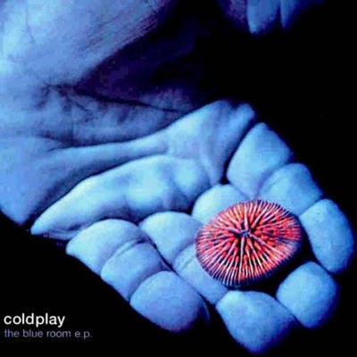

|  |
Durante suas gravações, o grupo passou por alguns tumultuados momentos como por exemplo o afastamento de Will Champion. Posteriormente ele voltaria com o pedido de desculpas por parte de Chris Martin, e, junto dele, formar-se-ia uma espécie de lei de boa conduta dentro do grupo, que dividiria de forma igual os lucros e proibiria a todos de consumirem cocaína.
A capa do EP foi escolhida por Chris Martin enquanto folheava o livro "Water Light Time", publicado pela Phaydon. Era um livro que continha diversas imagens da vida marinha, e então Chris decidiu que queria utilizar uma delas em sua nova obra. Então, ele e o designer, Tim Moore, que tinha um amigo que tinha contatos na Parlophone, optaram pela foto do pequeno coral da capa, que, além de bonito, cabia perfeitamente nas 12 polegadas da mesma.
| Título | Duração |
|---|---|
| Bigger Stronger | |
| Don't Panic | |
| See You Soon | |
| High Speed | |
| Such a Rush | |